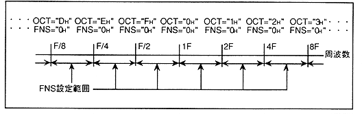
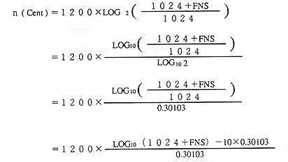

This register has a finer frequency setting function between the upper and lower octaves of "OCT". If the "FNS" and "OCT" values are both "0H", the pitch matches the sampling source. Figure 4.51 shows the relationship between the "FNS" value and the "OCT" value.
Figure 4.51 Relationship between OCT and FNS

The actual pitch (n) is calculated using the formula shown below.

The value obtained by this formula is expressed in unit cents (Cent).